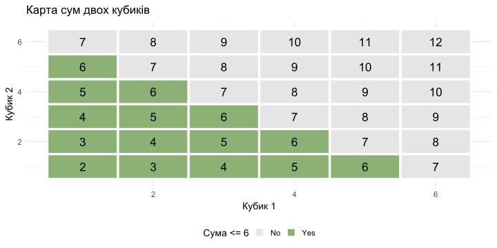
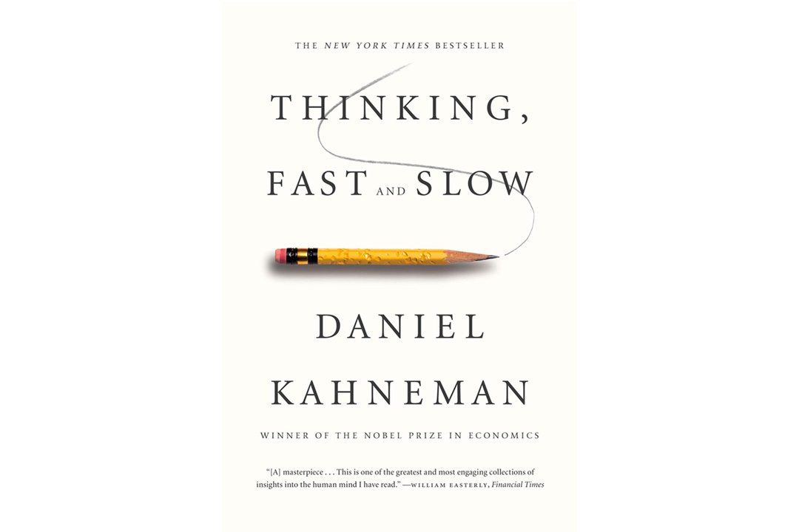
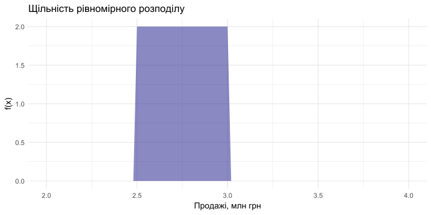
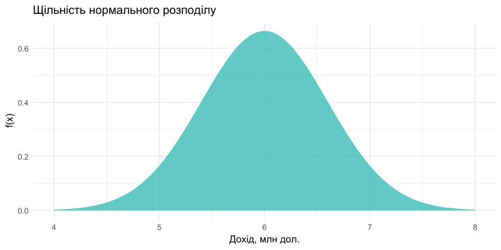
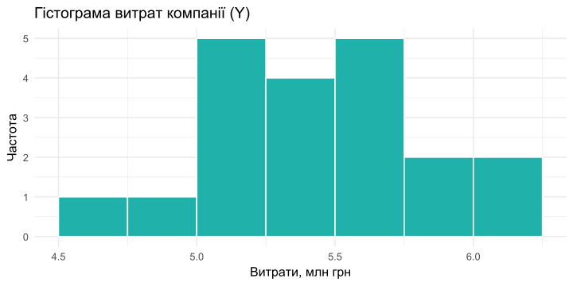
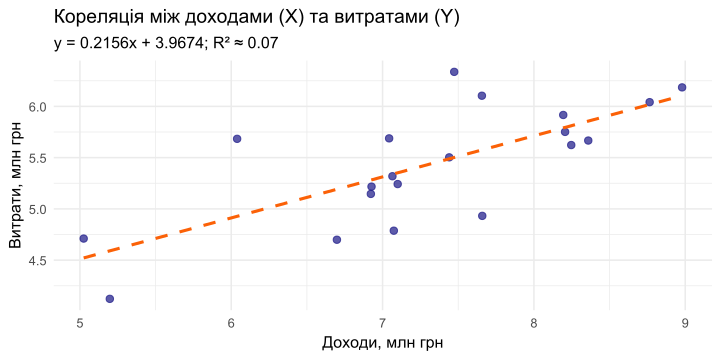

Аналітичні інструменти ризик-менеджменту
Ризик-менеджмент
Ігор Мірошниченко
Міжнародний інститут бізнесу
Ймовірність як інструмент
ВИПАДКОВІ ПОДІЇ
🎲 Випадкова подія — це подія, яка в результаті експерименту може відбутися, а може й не відбутися.
- Приклади в бізнесі:
- 📉 Отримання збитку компанією протягом місяця.
- 💳 Відмова клієнта сплатити за відвантажений товар.
- 🚚 Відмова постачальника виконати зобов’язання.
- Позначення:
- Події позначаються великими літерами: \(A, B, C\).
- Ймовірність події \(A\) позначається як \(P(A)\).
ВИЗНАЧЕННЯ ЙМОВІРНОСТІ
Ймовірність — це числовий показник можливості настання події, що вимірюється в діапазоні від 0 до 1.
- \(0 \le P(A) \le 1\)
Класичне визначення: Якщо існує \(n\) рівноможливих елементарних подій, з яких \(m_A\) сприяють настанню події \(A\), то:
\[ P(A) = \frac{m_A}{n} \]
ПРИКЛАД: ДВА ГРАЛЬНІ КУБИКИ
Завдання: Знайти ймовірність того, що при киданні двох кубиків сума очок буде не більше 6 (тобто \(\le 6\)).
- Загальна кількість результатів (n):
- Кожен кубик має 6 граней. Загальна кількість комбінацій: \(6 \times 6 = 36\).
- Кількість сприятливих результатів (\(m_A\)):
- Рахуємо комбінації, де сума \(\le 6\):
- Сума 2: (1,1) - 1
- Сума 3: (1,2), (2,1) - 2
- Сума 4: (1,3), (2,2), (3,1) - 3
- Сума 5: (1,4), (2,3), (3,2), (4,1) - 4
- Сума 6: (1,5), (2,4), (3,3), (4,2), (5,1) - 5
- Всього: \(1+2+3+4+5 = 15\).
- Рахуємо комбінації, де сума \(\le 6\):
- Ймовірність: \(P(A) = \frac{15}{36} = \frac{5}{12} \approx 0.417\)
Суб’єктивне визначення ймовірності
Коли не має експериментальних даних.
Ось приклади суб’єктивних ймовірностей:
- експерт з інвестицій вважає, що ймовірність отримання прибутку протягом перших двох років інвестиційного проекту становить 6%;
- прогноз менеджера з маркетингу: ймовірність продажу 1000 одиниць товару у перший місяць після його появи на ринку дорівнює 30 %.
АЛГЕБРА ПОДІЙ
graph TD
subgraph "Операції з подіями"
A["Сума (об'єднання) A ∪ B<br>Відбулася хоча б одна<br>з подій"]
B["Добуток (перетин) A ∩ B<br>Відбулися обидві події<br>одночасно"]
end
Приклад з кубиками:
Подія A: сума очок \(\{4 \le \text{сума} \le 8\}\)
Подія B: сума очок \(\{6 \le \text{сума} \le 10\}\)
Сума (A ∪ B): \(\{4 \le \text{сума} \le 10\}\)
Перетин (A ∩ B): \(\{6 \le \text{сума} \le 8\}\)
Несумісні події
- Поява однієї виключає появу іншої (\(A \cap B = \emptyset\)).
- Приклад: “випав орел” і “випала решка” за одне кидання.
Протилежна подія (\(\bar{A}\))
- Подія, яка полягає в тому, що \(A\) не відбулася.
- \(P(\bar{A}) = 1 - P(A)\)
ОСНОВНІ ФОРМУЛИ ЙМОВІРНОСТЕЙ
- Додавання ймовірностей (для несумісних подій):
- \(P(A \cup B) = P(A) + P(B)\)
- Додавання ймовірностей (для сумісних подій):
- \(P(A \cup B) = P(A) + P(B) - P(A \cap B)\)
- Множення ймовірностей (для незалежних подій):
- \(P(A \cap B) = P(A) \times P(B)\)
- Множення ймовірностей (для залежних подій):
- \(P(A \cap B) = P(A) \times P(B|A)\), де \(P(B|A)\) — умовна ймовірність події B за умови, що A вже відбулася.
ФОРМУЛА ПОВНОЇ ЙМОВІРНОСТІ
🧠 Ідея: Дозволяє знайти ймовірність події \(A\), яка може відбутися разом з однією з кількох несумісних “гіпотез” (\(H_1, H_2, ..., H_n\)), що утворюють повну групу.
\[ P(A) = P(H_1)P(A|H_1) + P(H_2)P(A|H_2) + \dots + P(H_n)P(A|H_n) \] \[ P(A) = \sum_{i=1}^{n} P(H_i)P(A|H_i) \]
Приклад: Компанія купує комплектуючі у 3 постачальників. Треба знайти загальну ймовірність отримати бракований виріб.
- \(H_1, H_2, H_3\) — гіпотези “виріб від постачальника 1, 2, 3”.
- \(A\) — подія “виріб виявився бракованим”.
ТЕОРЕМА БАЙЄСА: ОНОВЛЕННЯ ПЕРЕКОНАНЬ
💡 Суть: Дозволяє переоцінити ймовірність гіпотези (\(H_k\)) після того, як сталася подія \(A\).
\[ P(H_k|A) = \frac{P(H_k) \times P(A|H_k)}{P(A)} \]
- \(P(H_k)\) — апріорна ймовірність (досвід, початкова оцінка).
- \(P(A|H_k)\) — правдоподібність (ймовірність спостерігати \(A\), якщо гіпотеза \(H_k\) вірна).
- \(P(H_k|A)\) — апостеріорна ймовірність (оновлена оцінка після отримання нових даних).
ТЕОРЕМА БАЙЄСА: SS Central America
У 1988 році Томмі Томпсон використав Байєсівський пошук для знаходження затонулого у 1857 році корабля “SS Central America”, який перевозив тонни золота. Він оновлював карту ймовірностей знаходження скарбу на основі невдалих спроб.
ТЕОРЕМА БАЙЄСА: Бібліотекар чи Фермер?
У нас є опис людини: боязкий та сором’язливий, він мало контактує з людьми та зовнішнім середовищем, він цінує порядок та приділяє багато уваги дрібницям. Чим займається ця людина?
Він бібліотекар чи фермер?

ТЕОРЕМА БАЙЄСА: Бібліотекар чи Фермер?
Приклад:
- Співвідношення бібліотекарів до фермерів у світі за останніми оцінками 1 до 60. Але візьмемо 1 до 20, для прикладу.
- Сформуємо репрезентативну вибірку: 10 бібліотекарів та 200 фермерів.
- Припускаємо, що 40% (4 людини) бібліотекарів та 10% (20 людей) фермерів підходять під опис.
- Тоді ймовірність (апостеріорна):
\[ P(бібліотекар | опис) = 4 / (4 + 20) = 4 / 24 = 1 / 6 \approx 16.7\% \\ P(фермер | опис) = 20 / (4 + 20) = 20 / 24 = 5 / 6 \approx 83.3\% \]
ПРИКЛАД: ТЕОРЕМА БАЙЄСА
Завдання: На трьох лініях виготовляються мікросхеми. Відома продуктивність кожної лінії та ризик браку. Ви навмання взяли мікросхему, і вона виявилася бракованою. Яка ймовірність, що її виготовила перша лінія?
Дані:
| Номер лінії | Кількість, шт. | Ризик браку |
|---|---|---|
| 1 | 400 | 5% |
| 2 | 250 | 6% |
| 3 | 350 | 4% |
| **Всього** | 1000 |
- Подія A: мікросхема бракована.
- Гіпотези \(H_1, H_2, H_3\): мікросхема з лінії 1, 2, 3.
Крок 1: Апріорні ймовірності (досвід)
- \(P(H_1) = 400/1000 = 0.4\)
- \(P(H_2) = 250/1000 = 0.25\)
- \(P(H_3) = 350/1000 = 0.35\)
Крок 2: Повна ймовірність браку P(A)
- \(P(A) = P(H_1)P(A|H_1) + P(H_2)P(A|H_2) + P(H_3)P(A|H_3)\)
- \(P(A) = (0.4 \times 0.05) + (0.25 \times 0.06) + (0.35 \times 0.04)\)
- \(P(A) = 0.036 + 0.015 + 0.014 = 0.049\) (4.9%)
Випадкові величини
ТИПИ ВИПАДКОВИХ ВЕЛИЧИН
Випадкова величина (ВВ) — це величина, яка в результаті експерименту набуває певного числового значення.
🔢 Дискретна ВВ (ДВВ)
Приймає скінченну або зліченну кількість значень.
- Приклади:
- Кількість збиткових продуктів у портфелі.
- Сума очок на кубиках.
- Кількість відмов обладнання за місяць.
- Задається: Таблицею розподілу.
X | x1 | x2 | ...
---|----|----|----
P | p1 | p2 | ...- Властивість: \(\sum p_k = 1\)
📈 Неперервна ВВ (НВВ)
Приймає будь-яке значення з певного інтервалу.
- Приклади:
- Величина прибутку за квартал.
- NPV інвестиційного проекту.
- Час виконання задачі.
- Задається:
- Функцією розподілу \(F(x)\).
- Щільністю розподілу \(f(x)\).
РОЗПОДІЛИ ВИПАДКОВИХ ВЕЛИЧИН
Рівномірний розподіл
Всі значення в інтервалі [a, b] є однаково ймовірними. - Використання: Моделювання ситуацій з повною невизначеністю в межах діапазону. - Приклад: Продажі за місяць очікуються в діапазоні від 2.5 до 3 млн грн. Яка ймовірність, що вони будуть вищими за 2.8 млн?

Нормальний (Гауссів) розподіл
Найважливіший розподіл у статистиці. Описує безліч природних та економічних процесів. - Характеристики: Симетричний, форма дзвону, визначається середнім (\(\mu\)) та стандартним відхиленням (\(\sigma\)). - Приклад: Очікуваний дохід компанії — 6 млн дол. (\(\mu=6\)) зі стандартним відхиленням 0.6 млн (\(\sigma=0.6\)). Яка ймовірність отримати дохід нижче 5.5 млн?

3. Числові характеристики
МАТЕМАТИЧНЕ СПОДІВАННЯ (M(X) або E(X))
Математичне сподівання (МС) — це середньозважене значення всіх можливих значень випадкової величини. Це центр, навколо якого групуються значення.
- Для ДВВ: \(M(X) = \sum x_i p_i\)
Приклад: Лотерея - Випущено 100,000 квитків по 1 грн. - Таблиця виграшів:
| Виграш (xi), грн | Ймовірність (pi) |
|---|---|
| 5000 | 0.00002 |
| 1000 | 0.00008 |
| 100 | 0.00170 |
| 50 | 0.00350 |
| 10 | 0.00750 |
| 0 | 0.98720 |
- Очікуваний виграш на 1 квиток:
- \(M(X) = (5000 \times 0.00002) + (1000 \times 0.00008) + \dots + (0 \times 0.9872) = 0.6\) грн.
- Очікуваний прибуток організатора:
- \(1.00 \text{ грн (ціна)} - 0.60 \text{ грн (очікуваний виграш)} = 0.40\) грн/квиток.
МІРИ ВІДХИЛЕННЯ: ДИСПЕРСІЯ ТА СТАНДАРТНЕ ВІДХИЛЕННЯ
Дисперсія \(D(X)\) або \(Var(X)\) — середнє квадратичне відхилення значень ВВ від її математичного сподівання. Характеризує розкид значень. - \(D(X) = \sigma^2 = M[(X - M(X))^2]\)
Середнє квадратичне (стандартне) відхилення \(\sigma(X)\) або \(SD(X)\) — корінь з дисперсії. Має ту саму розмірність, що й сама ВВ, тому легше інтерпретується. - \(\sigma(X) = \sqrt{D(X)}\)
Властивість (для незалежних ВВ): Дисперсія суми/різниці дорівнює сумі дисперсій. - \(D(X \pm Y) = D(X) + D(Y)\)
КОРЕЛЯЦІЯ ТА КОЕФІЦІЄНТ ВАРІАЦІЇ
🔗 Кореляція (\(\rho_{xy}\))
Показує силу та напрям лінійного зв’язку між двома випадковими величинами. - \(\rho \in [-1, 1]\) - \(\rho > 0\): позитивна кореляція (зріст X пов’язаний зі зростом Y). Приклад: доходи та витрати на рекламу. - \(\rho < 0\): негативна кореляція (зріст X пов’язаний зі спадом Y). Приклад: ціна товару та обсяг продажів. - \(\rho = 0\): відсутність лінійного зв’язку.
Важливо: Кореляція впливає на дисперсію суми! - \(D(X \pm Y) = D(X) + D(Y) \pm 2\rho_{xy}\sigma_x\sigma_y\)
📊 Коефіцієнт варіації (CV)
Відносний показник розкиду, що дозволяє порівнювати ризикованість активів з різними масштабами. \[ CV = \frac{\sigma}{\mu} \] - Інтерпретація: показує, який відсоток від середнього становить стандартне відхилення. - Застосування: Порівняння ризику двох інвестиційних проектів. - Проект А: \(\mu_A = 100, \sigma_A = 20 \implies CV_A = 20\%\) - Проект Б: \(\mu_B = 500, \sigma_B = 50 \implies CV_B = 10\%\) - Висновок: Проект А є відносно більш ризикованим.
ПРИКЛАД: ОЦІНКА РИЗИКУ ОПЕРАЦІЙНОГО ПРИБУТКУ
Завдання: Компанія має доходи (X) та витрати (Y). Потрібно оцінити ризик отримання операційного прибутку (Z = X - Y) нижче 0.5 млн дол.
Дані: - Доходи (X): \(M(X) = 4\) млн, \(\sigma_X = 0.4\) млн. - Витрати (Y): \(M(Y) = 3\) млн, \(\sigma_Y = 0.3\) млн. - Коефіцієнт кореляції \(\rho_{xy} = 0.4\).
Рішення: 1. Математичне сподівання прибутку Z: - \(M(Z) = M(X) - M(Y) = 4 - 3 = 1\) млн. 2. Дисперсія прибутку Z (з урахуванням кореляції): - \(D(Z) = D(X) + D(Y) - 2\rho_{xy}\sigma_x\sigma_y\) - \(D(Z) = (0.4)^2 + (0.3)^2 - 2(0.4)(0.4)(0.3) = 0.16 + 0.09 - 0.096 = 0.154\) 3. Стандартне відхилення прибутку Z: - \(\sigma_Z = \sqrt{0.154} \approx 0.39\) млн. 4. Оцінка ризику (ймовірність P(Z < 0.5)): - Використовуємо функцію нормального розподілу (наприклад, в Excel): - =НОРМ.РАСП(0.5; 1; 0.39; 1) - Результат: \(\approx 10.1\%\)
Висновок: Ймовірність того, що операційний прибуток буде менше 0.5 млн, становить близько 10%.
4. Статистичний аналіз
СТАТИСТИЧНЕ ОЦІНЮВАННЯ
Коли ми не знаємо теоретичних розподілів, ми можемо оцінити числові характеристики ризику на основі історичних даних (вибірки).
Приклад: Аналіз доходів (X) та витрат (Y) компанії XGG за 20 періодів. - Розрахунок в Excel/R/Python: - СРЗНАЧ (AVERAGE) для оцінки математичного сподівання. - СТАНДОТКЛОН.В (STDEV.S) для оцінки стандартного відхилення. - КОРРЕЛ (CORREL) для оцінки коефіцієнта кореляції.
- Результати з прикладу:
- \(\bar{x} = 7.15, s_x = 0.80\)
- \(\bar{y} = 5.38, s_y = 0.39\)
- \(r_{xy} = 0.06\)
Інтерпретація: Дохід має значно більший розкид (волатильність), ніж витрати. Це може бути пов’язано з коливаннями цін на готову продукцію.
ВІЗУАЛІЗАЦІЯ РОЗПОДІЛУ: ГІСТОГРАМА
Гістограма — це графічне представлення розподілу даних. Вона показує, як часто значення потрапляють у певні інтервали (“кишені” або “біни”).
Навіщо потрібна? - Візуально оцінити форму розподілу (симетричний, скошений). - Виявити викиди (аномальні значення). - Перевірити припущення про нормальність розподілу.

ВІЗУАЛІЗАЦІЯ ЗВ’ЯЗКУ: ДІАГРАМА РОЗСІЮВАННЯ
Діаграма розсіювання (Scatter Plot) — це графік, що показує зв’язок між двома змінними. Кожна точка відповідає парі значень (x, y).
Навіщо потрібна? - Візуально оцінити наявність, напрям та силу кореляції. - Ідентифікувати нелінійні зв’язки. - Додати лінію тренду для моделювання залежності.

Дякую за увагу!

Ризик-менеджмент